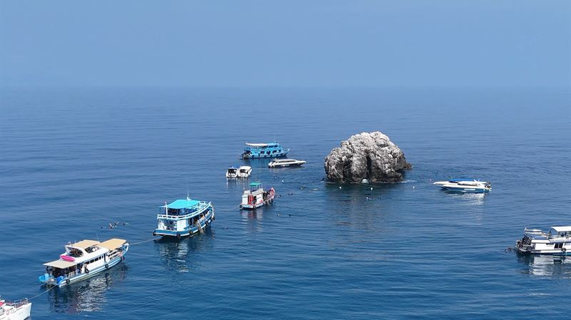
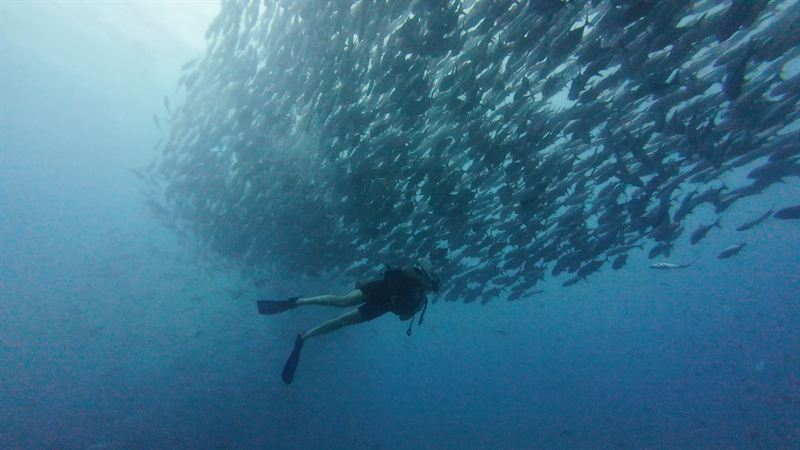
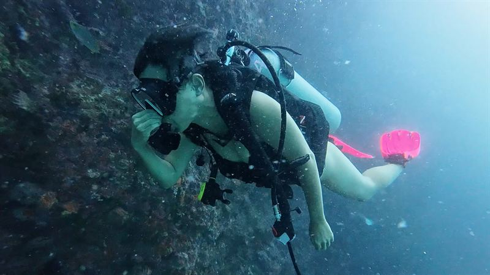
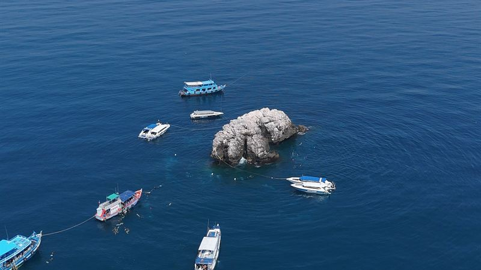

Punto de buceo

Guía de buceo en Sail Rock
Profundidades, la chimenea, corrientes, temporadas y la vida del mejor punto de buceo del golfo de Tailandia.

Inicio / Guías
Todo lo que contamos a nuestros buceadores en el barco, por escrito: dónde bucear, qué vas a ver, cuándo venir y cómo bucear con seguridad. Escrito por nuestros instructores en Chaloklum.
Para leer antes de bucear

Profundidades, la chimenea, corrientes, temporadas y la vida del mejor punto de buceo del golfo de Tailandia.

Cuándo vienen, con qué frecuencia los vemos y cómo comportarte en el agua si pasa uno a tu lado.

Los peces y criaturas que verás en Sail Rock y Koh Ma, con nuestras propias fotos y sus nombres.

Volar después de bucear, bucear con diabetes, síntomas de enfermedad descompresiva, resfriados y los animales que no hay que tocar.

Una comparación honesta de las dos islas para bucear y para aprender a bucear.
¿Te queda alguna duda?
Condiciones, visibilidad de esta semana, qué curso te conviene: escríbenos y te contestará un instructor.